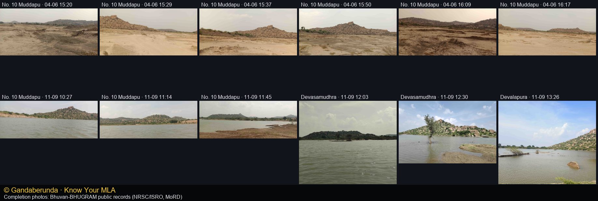
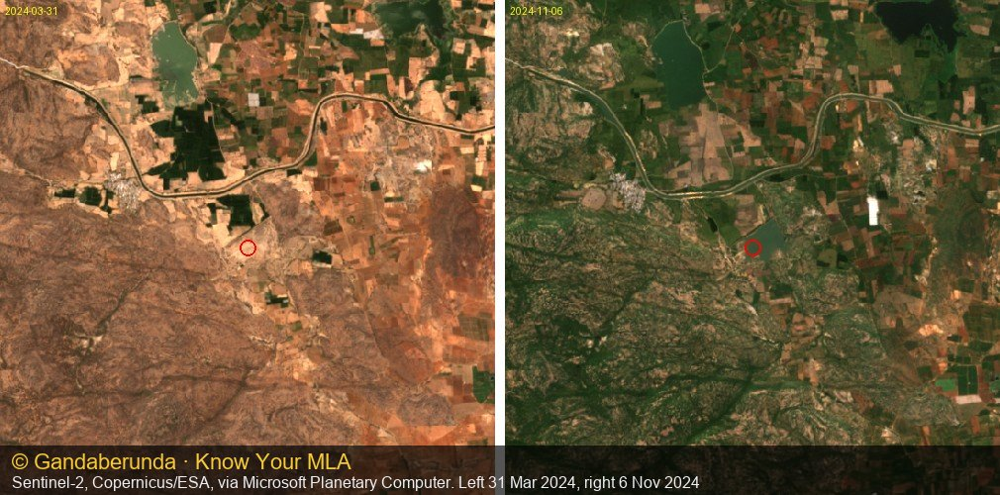
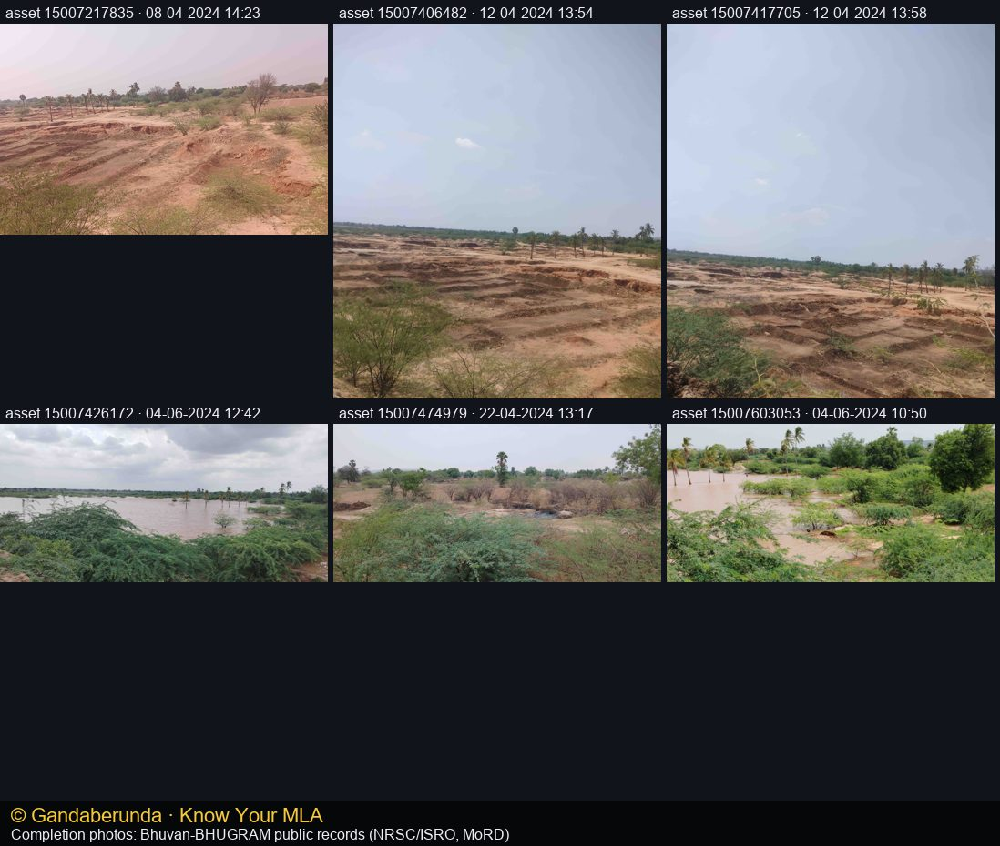
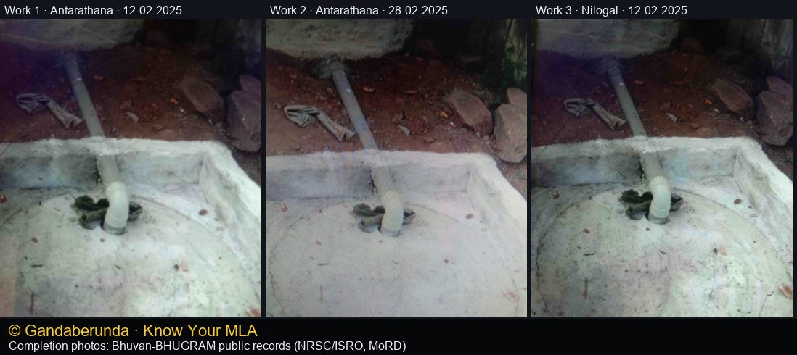
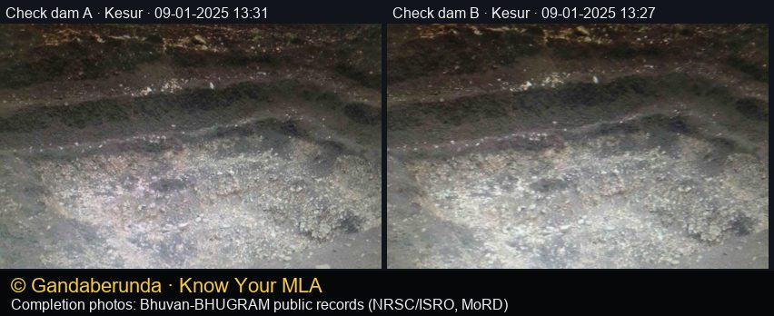

DRAFT · NOT PUBLISHEDRural job scheme (MGNREGA) · Koppal and Ballari districts · records of 2024-25
One tank, many works
At two village tanks on either side of the Tungabhadra, the government's own records show 246 separate "completed" works from 18 panchayats, with ₹13.05 crore booked against them. Every completion photo was taken at the same tank. Here is what the records show, what satellite images show, and the questions officials have not yet answered.
Sources: Bhuvan-BHUGRAM public dashboard and asset records (NRSC/ISRO for the Ministry of Rural Development), read 17 to 19 November 2026; Sentinel-2 imagery (Copernicus/ESA); Maxar imagery viewable in Esri World Imagery Wayback. This is reporting on public records. It does not say any person did anything wrong.
₹13.05 crbooked on 246 works photographed at two tanks
4.19 lakhperson-days of wages recorded on them
66works "completed" in one 4-hour photo session, 9 Nov 2024
1st and 2ndGangavathi and Karatagi, of 227 blocks, for photos taken far from the work's panchayat
Case 1 · Kampli taluk, Ballari district
152 works, 7 panchayats, ₹5.91 crore, one tank near Kanavi Timmalapura
The completion photos of 152 community works from No. 10 Muddapura, Devasamudra, Ramasagara, Devalapura, Metri, Nelludi and Suggenahalli panchayats were all taken within about 400 metres of one point (15.3425 N, 76.5825 E). On record they are distributary and feeder canals, flood and diversion channels, earthen bunds and water-harvesting ponds, from work years 2018-19 to 2023-24. Together they carry ₹5.18 crore in wages, ₹0.72 crore in material and 2.09 lakh person-days.

Top row: six of the 25 works photographed on 6 April 2024, in about 80 minutes. Bottom row: six of the 66 works photographed on 9 November 2024 between 10:27 and 14:13, some from a coracle. Every photo shows the tank itself; none shows a separate canal, channel, bund or pond.

Sentinel-2: dry on 31 March 2024; 12.6 hectares of water on 6 November 2024, with the photo point inside it.
What the satellite supports
Sharper Maxar images (open them in Esri Wayback at 15.3425, 76.5825) show a farmed and wooded bed behind an old bund in April 2019, a cleared bed by March 2022, and a holding tank from 2023. Real work was done here.
What it does not show
No new canals, feeder or diversion channels, or separate ponds appear around the tank between 2019 and 2026, though about 70 of the 152 works are recorded as such. At a common rate of about 2.5 cubic metres a person-day, the wages recorded would dig the whole 12.6-hectare bed about 4 metres deep.
All 152 works (CSV): panchayat, work code, Bhuvan asset ID, work type, year, photo time, person-days, wages, material, photo link.
Case 2 · Karatagi and Gangavathi taluks, Koppal district
94 works, 11 panchayats, ₹7.14 crore, Jeerala village tank
The completion photos for 94 community works from 11 panchayats in two taluks were taken from one roadside point by the Jeerala tank, near Adapura (15.5834 N, 76.5209 E). The work names say labourers of several panchayats were sent to desilt this one tank. On record are earthen check dams, pond renovations, absorption trenches, fisheries ponds and embankments, carrying about ₹5.92 crore in wages, ₹1.22 crore in material and 2.10 lakh person-days.

Six of the completion photos. The trenches are real: Maxar images show the bed was scrub in 2016 and covered in a grid of dug pits and trenches by March 2022, with ponds by 2026.
What the records and images support
Substantial digging took place in the tank bed. Labourers from many panchayats working on one big tank is allowed and is a common way to run the scheme.
The open questions
Does ₹7.14 crore of earthwork match the volume actually dug? Why is one tank split into 94 work codes? Do the recorded check dams, fisheries ponds and embankments exist as separate structures? Only the measurement books can answer this.
One structure, accepted as two or three different works
We compared every 2024-25 completion photo in Koppal district (23,580 works) with every other one, then checked the closest matches by eye. In each case below, the same physical object is the accepted completion photo for more than one work.

One cement tank, three works, two panchayats (Antarathana and Nilogal, Kushtagi taluk). Same pipe elbow, same rag, same stones, same phone. One work is recorded as an earthen bund. The official locations of the three works are about 20 km apart. One photo shows the fine grid pattern of a picture taken off a screen.

One pit, two "brushwood check dams" (Kesur, Kushtagi taluk), photographed 3.5 minutes apart, each recorded with 128 person-days and ₹31,872 in wages.
An old shed recorded as two new houses (Tumarikoppa, Kushtagi): two "state scheme house" works marked complete in December 2024 both show one small shed with "2017-18" painted on it, and one photo carries a 2019 camera date. ₹43,326 in wages.
One pit, two works (Budur, Yelburga) and one plant, two works (Talakere, Yelburga), each photographed minutes apart on one phone.
Wrong structure, identical bills (Bevinahal, Karatagi): 15 works recorded as bio-gas plants, compost pits, a recharge pit and a farm pond all show cattle sheds. Several carry the same material figure to the paisa, ₹42,025.27 or ₹35,560.45, across different work types. ₹5.92 lakh in material in all.
One house, two house works in three villages (Rajoor, Bennur, Budugumpa).
These are works on families' own land and homes, so we do not publish their work codes or photos of homes. The families are not the subject; the question is how two records were approved for one structure. The codes are in our Right to Information requests.
Where this money goes, and how anyone can trace it
We do not know who, if anyone, gained. The scheme leaves a paper trail for every rupee, and these are the records that would show it:
1. EstimateTechnical sanction: what is to be built, where, and the quantities.
2. Muster rollWho worked, on which days. Wages go to each worker's bank account.
3. Measurement bookAn engineer records the quantity done. Payment follows this.
4. Material billsVendors are paid through fund transfer orders.
5. GeotagA photo proves completion. Moderators accept or reject it.
Muster rolls and payments for any work code are public on the scheme's own site, nrega.nic.in. Search by work code, as listed in our CSV files, to see the muster rolls and fund transfer orders.
If one tank is booked as many works, the measurement books will show whether the same earthwork was measured more than once.
In its 2025 audit of the scheme in Karnataka (Report No. 13 of 2025), the Comptroller and Auditor General found completed work files with no photo of the asset, photos that could not be matched across stages, and social forestry works in Yelburga it called "suspect" after comparing photos with satellite images.
Karnataka's moderators rejected 419 of 42.5 lakh completion photos in all (0.010%), a quarter of the national rate. See the block ranking.
What we are doing next
Right to Information requests for the estimates, measurement books, muster rolls and material bills of every work above are prepared, addressed to the Taluk Panchayats of Kampli, Karatagi, Gangavathi and Kushtagi and the Zilla Panchayat, Koppal.
Requests for inquiry are prepared for the MGNREGA Ombudsperson of Koppal and Ballari districts, asking for site inspection and a social audit.
We will publish every reply in full, including any explanation that shows a work is genuine.
For journalists and officials
Every figure here comes from a public government record you can open yourself. The CSV files list each work code, the official photo link and the money recorded.
The strongest single check is the measurement books of the 152 Kampli works and the 94 Jeerala works, set against the tanks as they are today.
Officials, panchayat members or residents with an explanation or correction: write through Have your say. We publish replies in full and correct errors openly.